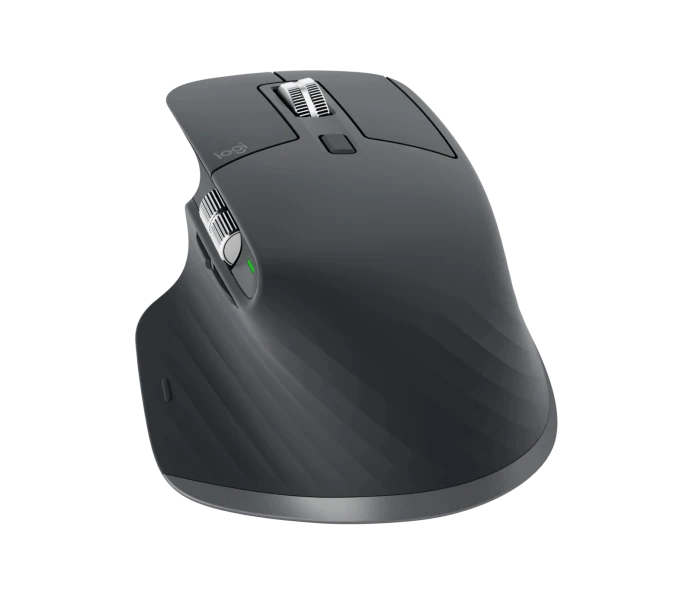

Mx Master 3S
Hace unos dias LogiTech me envió a casa este producto, el cual está diseñado para ser más ergonómico y cómodo a la mano, pensado para las sesiones largas en el ordenador, para diseñadores y programadores. La forma característica del ratón mantiene la mano en una posición de varios grados con la mesa, que hace que tengas menos cansancio o dolor de muñeca al tener una posición más natural.
Además, tiene una serie de botones que pueden usarse como atajos de teclado o macros que se situan en la parte izquierda del ratón a la altura del pulgar, y también una rueda que permte el desplazamiento en horizontal.
En mis primeros dias de uso, me costó bastante acostubrarme a la forma ergonómica del ratón debido a su anchura y ángulo, pero después me pareció bastante cómodo. Una de las características que más me gusta es que la rueda de desplazamiento de la parte superior del ratón se puede dejar completamente libre, es decir, al hacerla girar no hay rozamiento, o también con los habituales recorridos cortos, lo cual es bastante util para poder desplazarse rápidamente por documentos muy extensos.
Otra de las características que tiene es que por la parte trasera, hay un boton con tres posibles posiciones, los cuales sirven para conecar tres dispositivos diferentes al ratón es decir en la posición uno se podria tener un telefono, en la dos una tablet o un mac y en la tres un ordenador windows.
Una curiosidad es que cuando copias algo de texto en un ordenador con el click derecho y después cambias a otro ordenador mediante el botón de atrás, puedes pegar lo que habias copiado antes.
Puedes obtener este ratón por un precio de 135€ en la página oficial de LogiTech.
A continuación van a ser expuestos los pros y contras de este producto:
Pros:
Contras:
Para concluir, es muy importante que tengas interiorizado para que quieres este ratón, si lo tienes pensado para trabajar en programas ofimáticos, de edición de vídeo o para programar, es una muy buena opción siempre y cuando estes dispuesto a pagar su precio. Sin embargo, para jugar no es una buena idea, ya que su forma te impide apuntar correctamente y tiene un peso muy elevado.
9/10